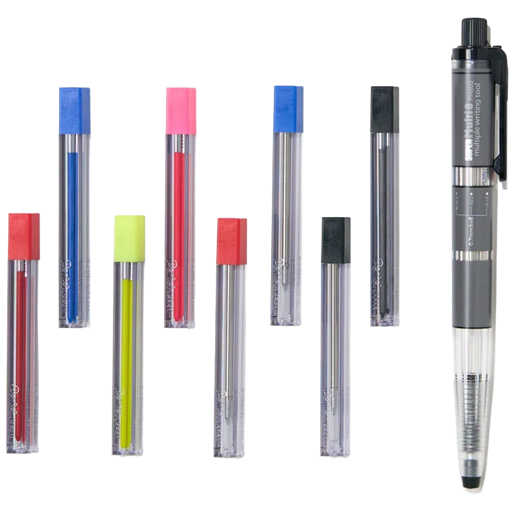
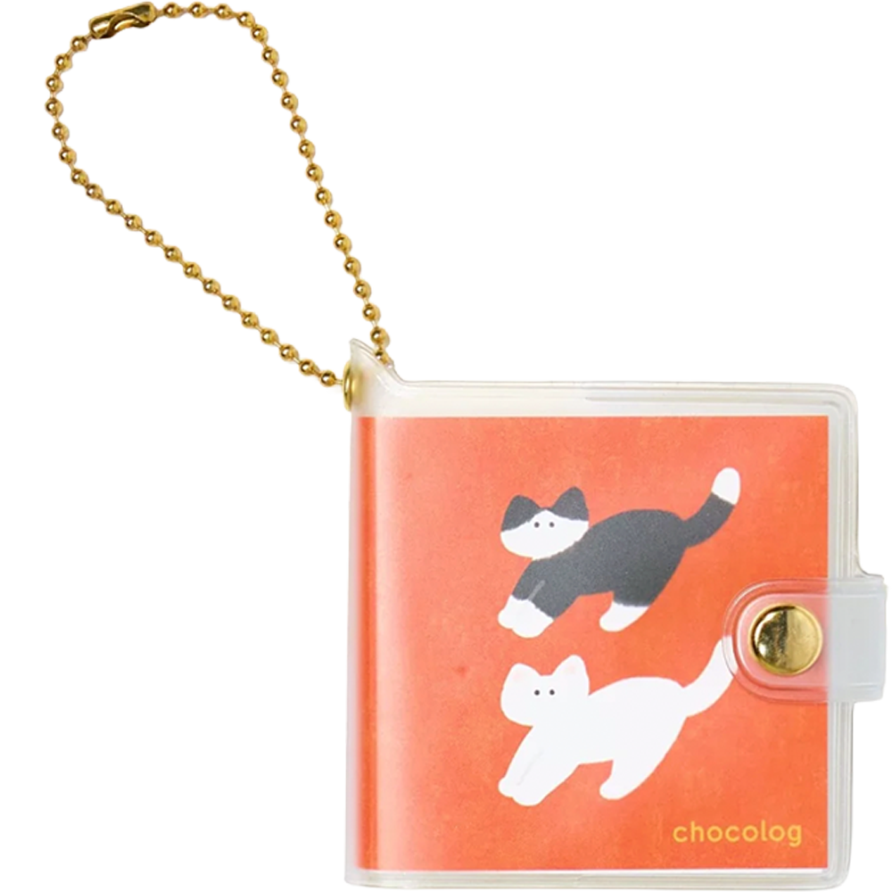
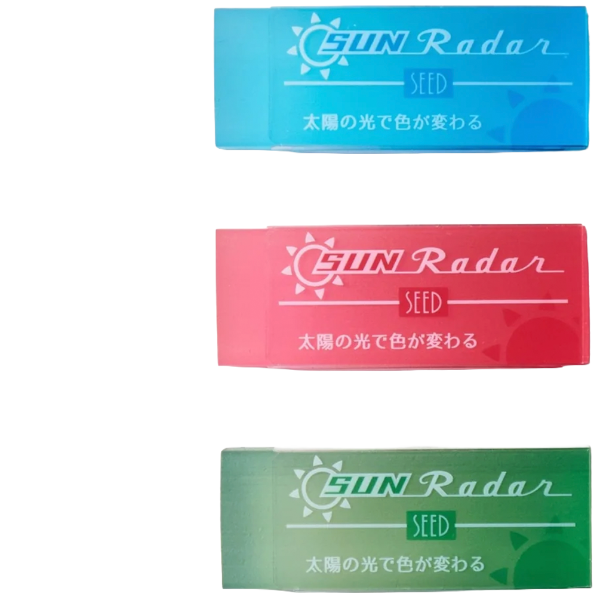
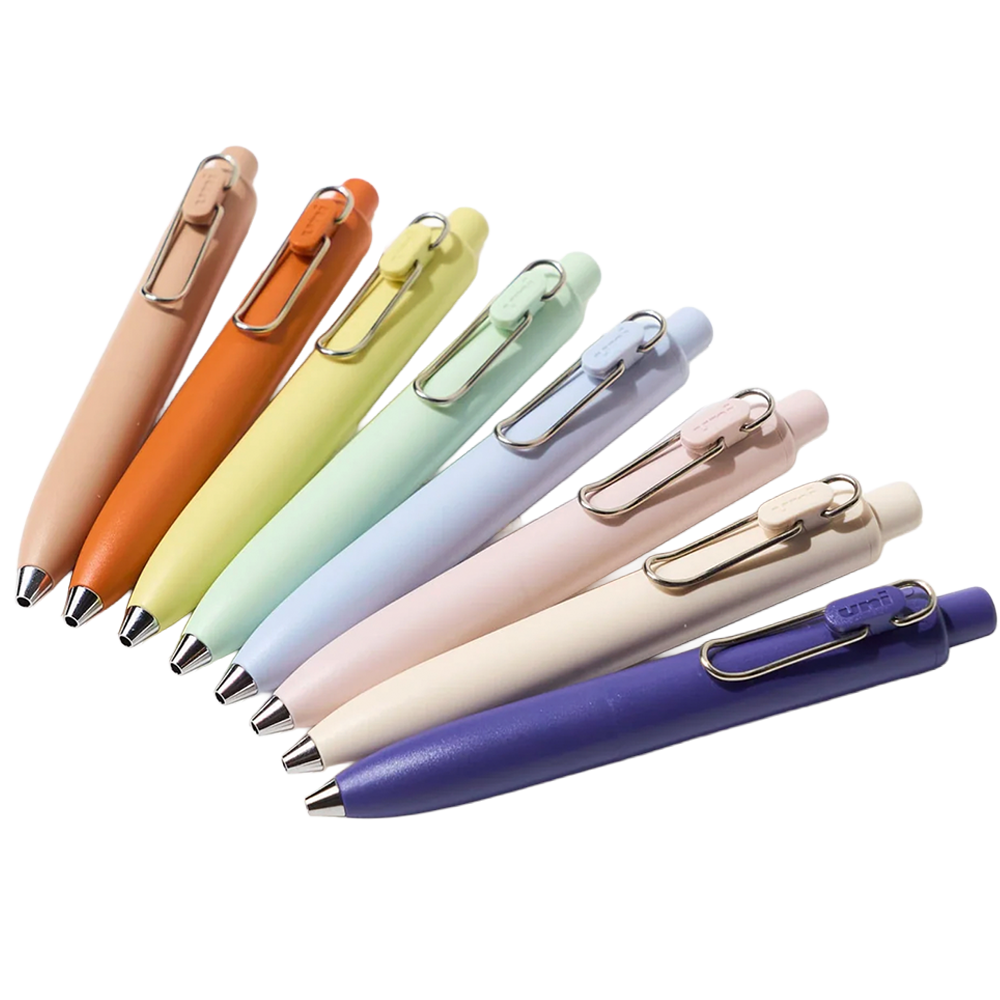
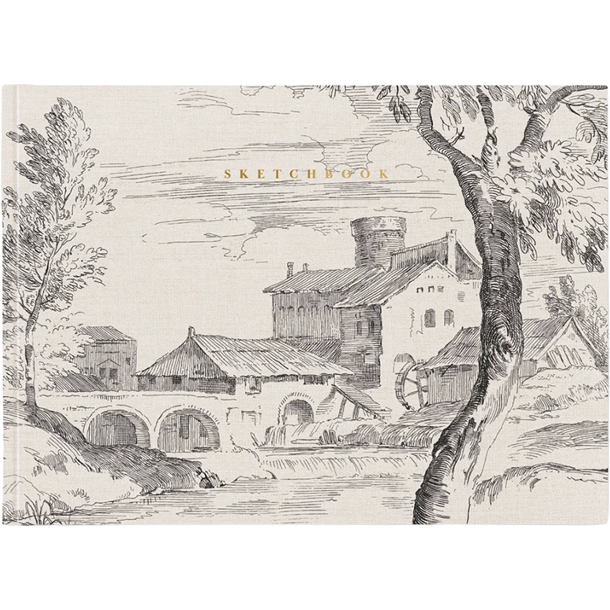

midliner pens
i have been getting these since i was in middle school. they're perfect for highlighting, but for drawing and sketcing too.
this particular set here has some great colors i'f love to have.
my favorite time
of the year was always
back to school shopping
because i just loved picking out
my...
pens
pencils
notebooks
sticky notes
and everything else.
for the sake of
i can not buy every piece of stationery my
desires
but i can certainly
make a list of it...
midliner pens
i have been getting these since i was in middle school. they're perfect for highlighting, but for drawing and sketcing too.
this particular set here has some great colors i'f love to have.

M8 mechanical pencil
i've always been a big fan of mechanical pencils, especially using them to sketch. this awesome pencil can carry 8 different colors of pencil leads at once. i want it so baddd

chocolog mini notebook keychain
recently in life i have found myself wanting a little notebook to carry around with me to record thoughts and ideas in and to doodle in. something like this would be convenient because i wouldnt necessarily need to keep it in a bag. i could also see this not being the most convenient, but if it wasn't $20 then i'd totally give it a try. it's also very cute.

sun radar eraser
i can always appreciate a nice eraser, and these ones change color in the sunlight. they also look like candy

uni-ball one P gel ink pens
these colors are nice and the wideness of the barrel probably gives these pens a more comfortable grip. i also feel like they'd make a nice "click" sound

landscape sketchbook
i've mostly always used portrait ratio sketchbooks, so i think it would be neat to sketch on landscape spreads and try new compositions. this sketchbook also has such a pretty cover.